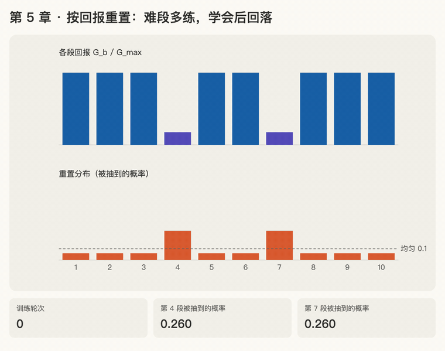

第 5 章 · 动作模仿：从哪开始练、什么时候喊停、难的地方多练
本地运行
git clone https://github.com/wikieden/robot-motion-rl
cd robot-motion-rl/code/notebooks
pip install jupyterlab torch numpy
jupyter lab ch05_imitation_sampling.ipynb也可以下载后直接用 VS Code 打开 .ipynb 运行。需要 GPU 的章节在 Colab 里选「代码执行程序 → 更改运行时类型 → GPU」。
本章回答：一段 10 秒的动作中间有个空翻，策略从头开始练，永远走不到空翻那里，怎么办？摔了以后为什么要立刻结束？一个动作库里有十几万条动作，怎么让难的片段多练一点？
讲解日期：2026-11-20 · 上一章：第 4 章 从仿真到真机 · 下一章：第 6 章 GRPO 为什么不适合底层运控
对应原文：DeepMimic §6.1 Initial State Distribution、§6.2 Early Termination（papers/deepmimic-1804.02717.txtL327、L405）；BeyondMimic Adaptive Sampling（papers/beyondmimic-2508.08241.txtL592–L601）；SuperMimic 附录 D.1（papers/supermimic-2610.28480.txtL836–L842）
本章缩写：RSI = Reference State Initialization（参考 / 状态 / 初始化：从参考动作的随机时刻开始一局）；ET = Early Termination（提前 / 终止）；G_b：第 b 段的折扣回报估计（b = bin，分箱）；G_max：能拿到的最大折扣回报；softmax：把一组数变成和为 1 的概率（《从零读懂 Transformer》第 3、6 章）。全部缩写见 附录 · 缩写与术语表
讲解
第一步：动作模仿是什么（2026-11-20）
类比：照着视频学跳舞。 你不需要知道「好的舞蹈」怎么定义，只要每一刻都和视频里的人一样就行。
DeepMimic（2018）把「模仿一段参考动作」变成 RL：奖励就是第 2 章的跟踪核，策略在物理仿真里学会用力矩把动作做出来。它解决了手写奖励的难题：「做一个漂亮的侧手翻」很难写成公式，但「和这段动捕数据一样」很好写。之后 PHC、BeyondMimic、SONIC、SuperMimic 都沿用这个框架，只是动作越来越多（从一条到十几万条）。
一句话：动作模仿把「做得好看」换成「和参考一样」，奖励就好写了。
第二步：参考状态初始化：从片段中间开始练（2026-11-20）
类比：学一首歌，最难的高音在第 3 分钟。如果每次都从头唱，没唱到那里就破音了，你永远练不到高音。直接从高音前几秒开始唱。
例子（编的）：一段 10 秒的动作，空翻在第 6 秒。训练初期策略只能撑 2 秒就摔：
| 起点 | 能练到空翻的概率 |
|---|---|
| 永远从第 0 秒开始 | 0（撑不到第 6 秒） |
| RSI：起点在 0–10 秒里均匀抽 | 起点落在第 4–6 秒（空翻前 2 秒内）就能练到：2 / 10 = 0.2 |
RSI（DeepMimic §6.1，L327）：每局开始时，从参考动作里随机抽一个时刻，把机器人摆成那一刻的姿态和速度，从那里开始跟。这样片段的每一段都有机会被练到。
一句话：从参考动作的随机时刻开局，难的片段才练得到。
第三步：提前终止：摔了就喊停（2026-11-20）
类比：练舞摔了，不要躺在地上继续「跳」完这首歌。
如果摔倒后不结束，策略会在地上躺着收集大量「躺着」的样本，这些样本对学会站着跳舞毫无用处，还挤占了一批数据的名额。DeepMimic §6.2（L405）的提前终止：一旦摔倒（某些身体部位碰地）就结束这一局。第 2 章说过，配合「每步正奖励」，终止还是「别摔」的学习信号。
SuperMimic 的终止条件就是第 2 章第四步的高度和倾斜阈值（附录 A，L704）。
一句话：摔了就停，数据都留给「站着」的状态，终止本身也是惩罚。
第四步：按回报重置：难的片段多练（2026-11-20）
类比：期末复习，会的题少看，错的题多看，但会的也偶尔翻一下，免得忘。
动作库很大时，均匀抽起点会把大部分时间花在走路这类简单片段上。BeyondMimic 的 adaptive sampling（L592–L601）：按失败率多抽难的片段，学会后逐渐回到均匀。SuperMimic 附录 D.1（L836–L842）写成了明确的公式：
- 把动作时间轴切成 1 秒一段（bin），每段维护一个回报估计 \(G_b\)（从这一段开始能拿多少折扣回报）。
- 重置分布是三部分的混合： - 50% 均匀； - 40% 按 \(\text{softmax}_b(-25\,G_b/G_{max})\)：回报越低的段越常被抽到； - 10% 按每段过去的 softmax 权重：学会了的难段还保留一点练习。
例子（编的）：5 段，\(G_b/G_{max}\) = [0.9, 0.9, 0.2, 0.8, 0.9]，第 3 段是空翻，还没学会：
| 段 | 1 | 2 | 3 | 4 | 5 |
|---|---|---|---|---|---|
| \(-25\,G_b/G_{max}\) | −22.5 | −22.5 | −5 | −20 | −22.5 |
| softmax | ≈0 | ≈0 | ≈1 | ≈0 | ≈0 |
| 最终分布（过去权重取同样的值） | 0.1 | 0.1 | 0.6 | 0.1 | 0.1 |
温度 25 很大，softmax 几乎全押在最差的那一段；50% 的均匀部分保证其他段不会被饿死（各 0.1）。
一句话：一半均匀保底、四成押最差的段、一成照顾学会过的难段。
动画演示：重置分布跟着回报变

可交互版：animations/05-reset-sampling.html（滑块：温度、均匀部分比例）。
怎么看：
- 上排柱子是 10 段各自的回报 \(G_b/G_{max}\)，第 4、7 段是两个难动作，一开始很低（第四步）。
- 下排柱子是重置分布：难段被抽得多，它们的回报就涨得快。
- 难段学会后，下排回落到接近均匀，但「过去权重」那 10% 让它们仍比别的段高一点。拖温度看分布变尖还是变平。
练习与作答记录
题 1（第二步）：一段 20 秒的动作，难点在第 15 秒，策略能撑 4 秒。从头开始练能练到难点吗？RSI 均匀抽起点时练到的概率是多少？
作答：（待作答）
题 2（第三步）：如果不做提前终止，而且奖励每步都是正的，策略在摔倒后会学到什么奇怪的行为？如果奖励每步都是负的呢？
作答：（待作答）
题 3（第四步）：把温度从 25 改成 1，第四步例子里的 softmax 大约是多少（只需判断是「接近均匀」还是「接近全押一段」）？为什么 SuperMimic 要用这么大的温度，又为什么还要留 50% 的均匀？
作答：（待作答）
口诀
跳舞照视频，奖励就好写；
难处在中间，随机开局才练得到；
摔了就喊停，躺着的样本不要；
一半均匀保底，四成押最差，一成照顾学会的。
本章复习卡片
M09（RSI 与提前终止各解决什么问题）、M10（SuperMimic 重置分布 50/40/10 的公式与作用）
附录 · 延伸阅读
留给以后深入学习用，不影响本章主线。★ 是建议先读的。
推荐阅读
| 读什么 | 读哪里 | 读它为了什么 |
|---|---|---|
| ★ DeepMimic | papers/deepmimic-1804.02717.txt §6.1（L327）、§6.2（L405）、消融（L753、L810） |
RSI 和提前终止的原始论证与消融 |
| ★ SuperMimic 附录 D.1 | papers/supermimic-2610.28480.txt L836–L842 |
按回报重置的完整公式 |
| BeyondMimic Adaptive Sampling | papers/beyondmimic-2508.08241.txt L592–L601、消融 L818–L823 |
难段多练的效果（简单动作迭代数减半） |
| AMP | papers/amp-2104.02180.txt |
不要求逐帧跟踪、只要求「像」的风格奖励 |
| PHC | papers/phc-2305.06456.txt |
大动作库 + 摔倒恢复 |
数学原理
- softmax 与温度：\(\text{softmax}(x)_i = e^{x_i}/\sum_j e^{x_j}\)；输入乘一个大数（温度 25）会让最大的那个几乎独占概率。
- 混合分布：几个概率分布按权重相加（权重和为 1），结果仍是概率分布。
公式清单
| 公式 | 意思 |
|---|---|
| \(P_{RSI}(\text{练到难点}) = \min(1,\ \text{撑得住的时间}/\text{片段长度})\)（本章简化） | RSI 的效果 |
| \(p_b = 0.5\cdot\frac{1}{B} + 0.4\cdot\text{softmax}_b(-25G_b/G_{max}) + 0.1\cdot w^{past}_b\) | 按回报重置 |
代码对照：把本章的数字用代码算一遍
用 Python + NumPy 把讲义里讲过的数算一遍，不算练习题。代码在仓库本地
robot-motion-rl/solutions/chapter-code/ch05_imitation_sampling.py，配套测试tests/test_ch01_06.py，notebook 在notebooks/ch05_imitation_sampling.ipynb。Mac 上直接能跑，不需要 GPU：
bash cd robot-motion-rl/solutions/chapter-code uv run python ch05_imitation_sampling.py uv run pytest tests/test_ch01_06.py
讲义 ↔ 代码（片段长度、各段回报是编的，50/40/10 和温度 25 取自 SuperMimic 附录 D.1）：
| 讲义 | 公式 | 写法 | 跑出来 |
|---|---|---|---|
| 第二步 RSI | 窗口 / 片段长 | rsi_reach_probability(...) |
从头 0；RSI 0.2 |
| 第四步 softmax | \(\text{softmax}(-25G/G_{max})\) | reset_distribution(g)[1] |
[0, 0, 1, 0, 0] |
| 第四步 混合 | 0.5 + 0.4 + 0.1 | reset_distribution(g)[0] |
[0.1, 0.1, 0.6, 0.1, 0.1] |
关键几行：
hard = softmax(-temp * g) # 回报越低，权重越大；温度 25 让最差的段几乎独占
uniform = np.full_like(g, 1.0 / len(g)) # 均匀保底
mix = 0.5 * uniform + 0.4 * hard + 0.1 * past # 三部分混合，和仍为 1
代码里才看得到的 2 件事：
- softmax 先减最大值再 exp，防止 \(e^{-5}\) 和 \(e^{-22.5}\) 这种数相差太大时溢出或下溢。
- 「过去的权重」在真实训练里是历史上 softmax 的累计，例子为了简单直接用当前值；所以 0.4 + 0.1 都押在第 3 段，得 0.6。
自己改一改（不影响练习答案）：
- 把第 3 段的回报从 0.2 慢慢提到 0.9，看最终分布怎么回到均匀。
- 把温度改成 5、1，看 softmax 怎么从「全押」变成「平均」。